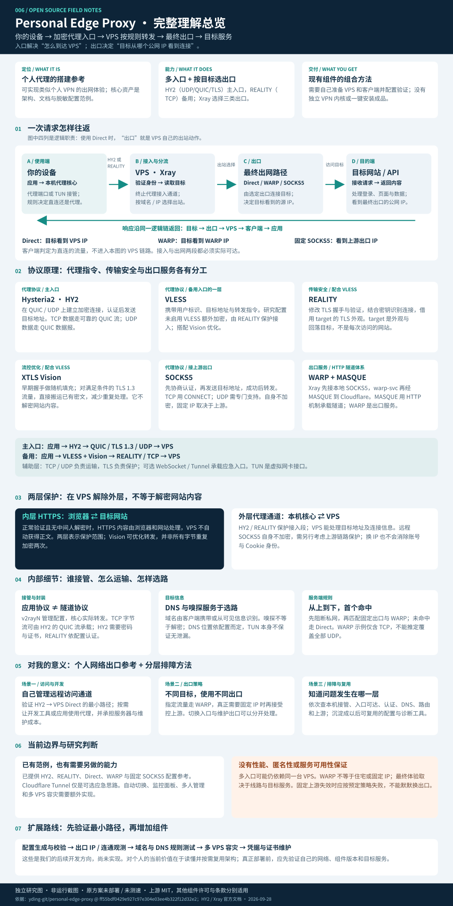

你的设备
应用 → 本机代理核心
TUN / 代理设置 · 初步分流客户端接住请求，VPS 接力转发；入口决定如何到达 VPS，出口决定目标网站看到哪个公网地址。这个库把这些组件组织成一套可参考的个人代理方案。
交互仅用于解释原理，不发起代理连接。
应用 → 本机代理核心
TUN / 代理设置 · 初步分流认证 → 读取目标 → 匹配规则
入口在这里终止，选择出站VPS 建立到目标的连接
此时中转站也是最终出口处理请求，返回内容
看到的源 IP：VPS 公网 IPDirect：Xray 使用 VPS 原生网络连接目标，不需要额外上游。C 是 B 的出站动作，不代表另一台服务器。
应用主动使用本地代理端口，或由 TUN 虚拟网卡接收流量。客户端规则决定哪些直连、哪些交给 VPS。本图展示的是被选中进入代理的请求。
如果把“个人 VPN”理解为让自己的设备经远端服务器出网，它能提供搭建参考。更准确的定位是个人代理架构资料库：TUN 能带来类似 VPN 的使用体验，底层转发依靠现有代理核心和协议。
VPS 选型、SSH 引导、Xray 服务端、v2rayN 客户端、WARP 与固定 SOCKS5 配置说明，以及 Agent 部署维护约定。
v2rayN 管理节点与配置；客户端核心接管和封装流量；VPS 上的 Xray 认证、分流、转发；WARP 服务提供可选出口。
可达的 VPS、客户端、凭据、HY2 证书及端口设置。启用其他出口时，还需安装 WARP 或准备可信的上游代理。
| 能力 | 如何实现 | 边界 |
|---|---|---|
| 客户端分流 | 代理设置或 TUN + Rule | 哪些应用和流量被接管取决于实际配置 |
| 日常接入 | HY2，示例 UDP 24443 | 依赖线路支持 UDP；端口可以调整 |
| 备用接入 | VLESS + REALITY + Vision，示例 TCP 443 | 有备用入口不等于已经实现自动切换 |
| 按目标选择出口 | Direct / 本地 WARP SOCKS5 / 固定 SOCKS5 | 上游服务要先配置好；域名清单需要维护 |
| 访问限制与固定出口策略 | 私网地址阻断；指定出站失败时不自动回落 | 要验证规则完整性和实际故障行为 |
| Cloudflare Tunnel | README 中提出的可选应急入口 | 当前服务端示例未提供对应配置 |
依据：上游 README、服务端 JSONC 与客户端示例 [1–4]。仓库未交付独立 VPN 内核、成品 VPN 服务、完整管理面板或一键部署程序。
同一条通道会组合代理协议、传输方式和安全层。
这套方案用到的代理协议主要是 Hysteria2、VLESS 和 SOCKS5。REALITY 提供接入安全与握手外观，Vision 优化流量处理；WARP 是出口服务，本例使用 MASQUE 隧道。它们处在不同层次。
先建立基于 UDP 的 QUIC 加密连接，使用 HTTP/3 请求完成认证；然后发送“连接哪个地址和端口”的指令。TCP 数据走可靠的 QUIC 流，UDP 数据走 QUIC 数据报。
用轻量请求格式携带用户标识、目标地址、端口和转发指令。服务端验证用户后，再连接目标。这里的 VLESS 与 REALITY、Vision、TCP 配合使用。
decryption: none，未启用 VLESS 自身的额外加密；不能把这一配置推广到所有新版本。[2,12]修改 TLS 握手与验证方式，结合配置的密钥信息识别合法连接，并借用目标站点的 TLS 外观。认证通过后承载代理请求，未通过的连接可回落到配置的 target。
在连接早期对内层握手做随机填充；对满足条件的 TLS 1.3 流量，可转为更直接地搬运已有密文，减少重复封装与处理开销。
flow: xtls-rprx-vision。它不是另一条独立入口，也不解密网站 HTTPS；效果需要实测。[12]双方先协商认证方式，再发送“请连接这个地址和端口”的请求，成功后转发数据。TCP 常用 CONNECT；UDP 有单独的 UDP ASSOCIATE 机制，需两端实际支持。
Xray 将请求交给本机 WARP 的 SOCKS5 端口，warp-svc 再建立通往 Cloudflare 的隧道。本例记录使用 MASQUE：通过 HTTP 机制承载代理隧道，相关传输可基于 HTTP/3 / QUIC。
主入口：应用数据 → HY2 代理请求 → QUIC（含 TLS 1.3，基于 UDP）→ VPS
备用入口：应用数据 → VLESS + Vision → REALITY / TCP → VPS
WARP 出口：VPS 的 Xray → SOCKS5（本机回环）→ warp-svc / MASQUE → Cloudflare → 目标
可选应急入口：VLESS 数据可由 WebSocket 帧承载，经 Cloudflare 边缘与 Tunnel 到达 VPS；cloudflared 主动向 Cloudflare 建立连接。上游只提出这条思路，未提供对应示例。[1,16]
辅助概念：TCP / UDP 是基础传输；QUIC 在 UDP 上提供加密连接与多路流；TLS 保护传输内容；WebSocket 提供持续双向消息通道。TUN 是虚拟网卡接口，Xray / sing-box 是执行程序，Direct 是直接出网策略，它们都不应被当成独立的远程代理协议。
把“谁接管”“怎么运输”“从哪出去”分开理解。
代理端口需要应用主动使用；TUN 是虚拟网卡，配合系统路由把流量交给客户端核心。客户端仍可按规则让部分目标直接访问，不经过 VPS。
浏览器的 TCP 数据可以放进 HY2 的 QUIC 通道。QUIC 基于 UDP，并为流提供可靠传输。因此“HY2 用 UDP”不代表网页数据就没有可靠性保障。
客户端携带目标域名或 IP、端口和数据。HY2 用密码认证并验证 TLS 证书；REALITY 示例结合 VLESS 用户标识、公私钥及 shortId 等配置校验接入。
域名可能由客户端直接提供，也可能从可见的 HTTP/TLS/QUIC 信息中识别。嗅探不等于解密 HTTPS；DNS 在哪解析取决于配置，不能仅凭 TUN 就保证无泄漏。
Xray 从上到下使用首个命中规则。此示例先阻断私网，再匹配固定 SOCKS5 与 WARP；未命中则走首个 Direct 出站。WARP 示例规则仅匹配 TCP。
常见 TCP 场景中，代理建立到目标的连接，持续转发两边的字节流。响应沿同一逻辑代理链返回，浏览器最终收到网页或 API 结果；VPS 无需运行浏览器。
依据：服务端示例 [2]、HY2 协议 [7]、Xray 路由与入站文档 [8–9]。这些是协议和配置层解释，未声称在本机部署验证。
正常证书验证且没有中间人解密时，网站内容、密码和 API 数据由应用层 TLS 保护。
保护这一段接入传输；VPS 终止外层代理通道后，继续转发内层数据。
“内外两层”用于区分保护范围，不表示所有字节始终重复做两次 TLS 加密；Vision 可对符合条件的内层 TLS 1.3 数据优化转发。[12]
对正在积累开源项目能力的你，这个库最有价值的是提供一份个人网络出口架构参考。以后需要管理自己的远程访问、开发流量或 AI 服务连接时，可以按问题选择组件，并按层排错。
从 HY2 → VPS Direct 验证最小路径。你能控制配置和运行状态，同时也承担服务器、证书和维护成本。
沉淀：最小部署与验证方法把某些开发或 AI 服务交给单独出口。入口更换和出口策略可以独立管理；实际地区支持和服务可用性仍需确认。
沉淀：按目标选择出口分开检查本机接管、VPS 可达性、认证、DNS、路由和上游出口，不再把所有故障都归为“节点不行”。
沉淀：可复用的分层排障思路可以围绕配置生成、连通测试和出口观测做小工具。现阶段更适合作为研究与实施参考，产品能力还需要开发。
沉淀：网关工具的设计基础Tailcat：重点是让两台设备在复杂网络中建立按需连接。
Personal Edge Proxy：重点是让客户端经 VPS 访问互联网目标，并控制最终出口。两者可解决不同问题，不能仅因都使用加密通道就视为同一种工具。
| 当前需求 | 考虑的结构 | 要先验证什么 |
|---|---|---|
| 只需经自己的 VPS 出网 | HY2 → Direct | 本地到 VPS 的 UDP、证书和目标可达性 |
| UDP 不稳定或受限 | 增加 REALITY TCP 入口 | TCP 路径可达，且切换方式明确 |
| 指定流量需要独立出口 | 增加 WARP 出站规则 | 真实出口、目标服务响应和域名覆盖 |
| 指定目标需要固定公网 IP | 增加受控固定 SOCKS5 | 固定性、链路保护，以及故障时不回落 |
本栏是我们的设想，尚未实现。
本次研究的证据边界：阅读并核对公开文档与配置；没有购买或部署 VPS，没有测得速度、稳定性或账号可用性数据。网页和图表是本仓库独立制作的理解材料。
覆盖能力定位、四方交互、请求与响应、两层加密、场景、个人价值、扩展方向和验证边界。手机可打开原图放大阅读。

图片来源：本仓库依据固定研究提交及协议文档独立绘制；非官方宣传图、运行截图或网络测试结果。
固定研究提交 ff55bdf0429e927c97e304e03ee4b322f12d32e2 · 查阅日期 2026-09-28。上游采用 MIT 许可；各组件的许可及服务条款分别适用。使用需符合所在地区法规和相应服务条款。